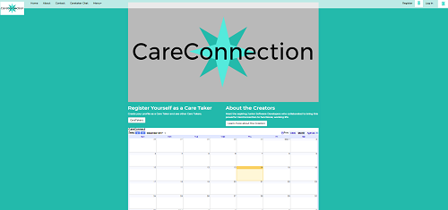
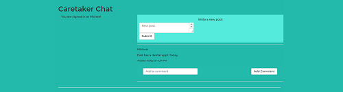
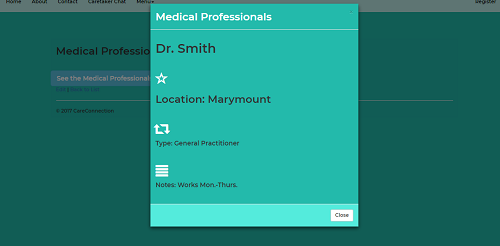

Kathleen Repko
A Software Developer's Portfolio
CareConnection
Capstone Project
Database-first MVC application
Object: to showcase the skills acquired and developed throughout We Can Code IT twelve-week coding boot camp.
Scrum and Agile principles were applied.
Notable features: log-in with authentication, uploadable profile picture, search function, message board, modal windows.
The impetus behind building CareConnection stemmed from the need to help caretakers keep notes, prescriptions, medical appointments, contact information, and schedules in one central place. When multiple people need to organize around a person who also requires medical attention, prescriptions, and doctors visits, it is difficult to make sure all people involved in care have the necessary information.
Take me to CareConnection on GitHub!


